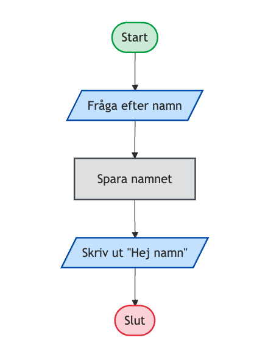
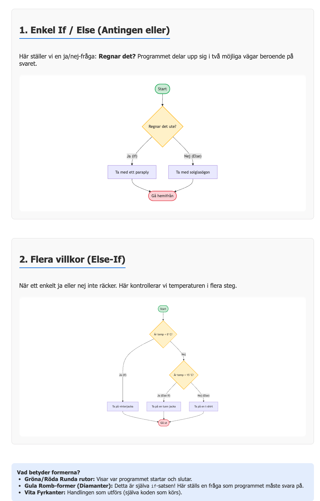
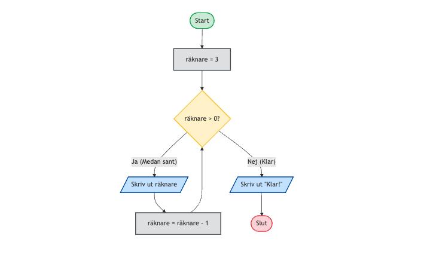
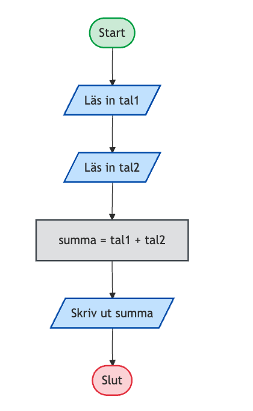
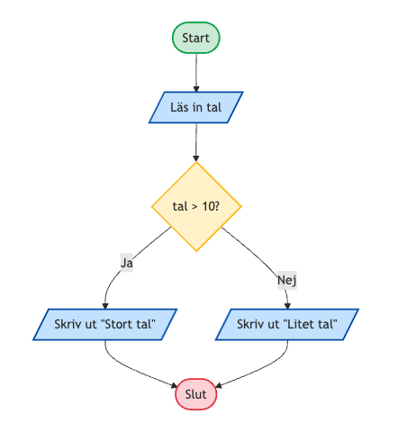
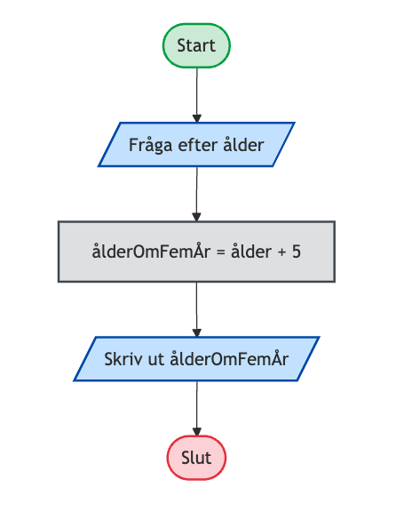
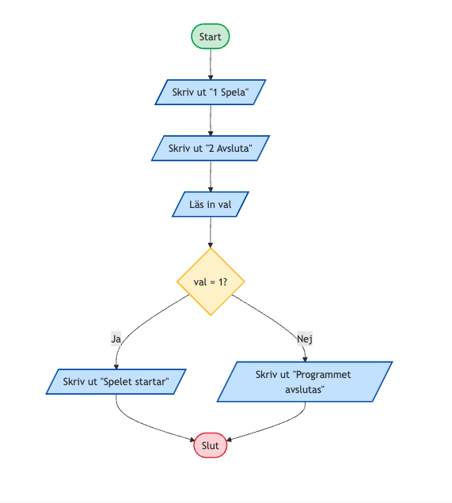
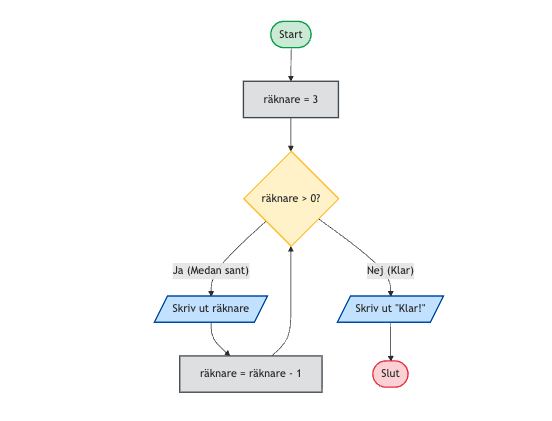

Programmering nivå 1 med Python
Kapitel 3: Problemlösning i programmering
Detta kapitel visar hur programmerare arbetar när de löser problem, planerar lösningar och omvandlar idéer till fungerande program.
Innehållsförteckning
Klicka på ett avsnitt för att hoppa direkt.
3.1 Vad är ett programmeringsproblem
Ett programmeringsproblem är en uppgift som kan lösas med hjälp av ett program.
Programmet ska ta emot information, göra något med informationen och sedan ge ett resultat.
Ett enkelt exempel kan vara ett program som räknar ut hur gammal en person är om fem år.
Problemet kan beskrivas så här som pseudokod:
Fråga användaren efter sin ålder
Räkna ut åldern om fem år
Skriv ut resultatetDetta problem kan lösas med ett program.
age = int(input("Hur gammal är du? "))
print(f"Om fem år är du {age + 5} år gammal")Programmeringsproblem finns i många olika områden.
Exempel
- beräkna resultat i ett spel
- sortera information i en databas
- räkna ut priser i en webbshop
- analysera data
När programmerare arbetar börjar de nästan alltid med att förstå problemet innan de börjar skriva kod.
Ett bra sätt att tänka är att ställa frågor som:
- Vad ska programmet göra?
- Vilken information behövs?
- Vad ska programmet skriva ut?
Genom att förstå problemet tydligt blir det mycket lättare att skriva ett program som fungerar.
3.2 Algoritmer
När man löser ett programmeringsproblem behöver man bestämma vilka steg som ska utföras för att nå en lösning. Denna stegvisa beskrivning kallas en algoritm.
En algoritm är alltså en tydlig serie instruktioner som beskriver hur ett problem ska lösas.
Algoritmer används inte bara i programmering. De finns även i vardagliga situationer där man följer en serie steg.
Exempel är
- ett recept i matlagning
- instruktioner för att bygga en möbel
- vägbeskrivningar
Alla dessa beskriver vilka steg som ska göras och i vilken ordning.
Exempel på en enkel algoritm
Tänk dig ett program som ska räkna ut hur gammal en person är om fem år.
Algoritmen kan beskrivas så här:
fråga användaren efter ålder
spara åldern i en variabel
lägg till 5
skriv ut resultatetNär algoritmen är tydlig kan den enkelt omvandlas till ett program.
age = int(input("Hur gammal är du? "))
print(f"Om fem år är du {age + 5} år gammal")Varför algoritmer är viktiga
Algoritmer hjälper programmerare att planera en lösning innan de skriver kod, förstå hur ett problem ska lösas och strukturera sina program.
Om man börjar skriva kod direkt utan att tänka igenom algoritmen kan programmet lätt bli svårt att förstå eller innehålla fel.
Egenskaper hos en bra algoritm
En bra algoritm ska vara tydlig, stegvis, logisk och möjlig att följa.
Varje steg ska vara enkelt att förstå och utföra.
Sammanfattning
En algoritm är en steg-för-steg-beskrivning av hur ett problem ska lösas.
Genom att först formulera en algoritm blir det mycket lättare att skriva ett fungerande program.
3.3 Dela upp problem
Många programmeringsproblem kan vara svåra att lösa direkt. Ett vanligt arbetssätt i programmering är därför att dela upp problemet i mindre delar.
När ett stort problem delas upp i mindre delar blir det lättare att förstå och lösa.
Detta arbetssätt används av nästan alla programmerare.
Exempel
Tänk dig att du ska skriva ett program som räknar ut medelvärdet av flera tal.
Om man försöker lösa hela problemet direkt kan det kännas svårt. Men om man delar upp problemet i mindre steg blir det enklare.
Problemet kan delas upp så här:
fråga användaren efter ett tal
fråga efter nästa tal
lägg ihop talen
räkna hur många tal som finns
dela summan med antalet
skriv ut resultatetNär problemet är uppdelat i steg blir det mycket lättare att skriva programmet.
Mindre delar i program
I programmering kan man ofta dela upp problem i delar som att läsa in information, göra beräkningar, fatta beslut och skriva ut resultat.
Om man arbetar steg för steg blir programmet ofta lättare att förstå, lättare att testa och lättare att ändra.
Exempel i Python
Här är ett enkelt program där problemet har delats upp i tydliga steg.
number1 = int(input("Skriv ett tal: "))
number2 = int(input("Skriv ett tal till: "))
summa = number1 + number2
print(f"Summan är {summa}")Programmet läser in två tal, lägger ihop talen och skriver ut resultatet.
Sammanfattning
Att dela upp problem är ett viktigt arbetssätt i programmering.
Genom att dela upp ett problem i mindre delar blir det lättare att förstå problemet, lättare att skriva programmet och lättare att hitta fel i koden.
3.4 Pseudokod
Innan man börjar skriva kod kan det vara bra att planera lösningen. Ett vanligt sätt att göra detta är att använda pseudokod.
Pseudokod är ett sätt att beskriva ett program med vanliga ord och enkla instruktioner istället för riktig kod.
Det liknar programmering, men man behöver inte följa exakt syntax som i ett programspråk.
Syftet med pseudokod är att planera lösningen på ett problem, tänka igenom vilka steg programmet ska göra och göra det lättare att skriva koden senare.
Exempel
Anta att vi vill skriva ett program som frågar användaren efter ett tal och säger om talet är stort eller litet.
Pseudokoden kan se ut så här:
läs in ett tal
om talet är större än 10
skriv ut stort tal
annars
skriv ut litet talNär lösningen är planerad kan man skriva programmet i Python.
number = int(input("Skriv ett tal: "))
if number > 10:
print("Stort tal")
else:
print("Litet tal")Gör indraget med tab-tangenten. Det är mycket viktigt att du kommer ihåg indraget med tab på nästa
rad efter if.
Varför pseudokod är användbart
Pseudokod hjälper programmerare att fokusera på lösningen istället för syntax, förstå programmet innan de skriver koden och planera större program.
Det gör också att andra personer lättare kan förstå hur ett program är tänkt att fungera.
Sammanfattning
Pseudokod är en enkel beskrivning av ett program i steg.
Man använder vanliga ord istället för riktig kod, men strukturen liknar ett program. När pseudokoden är klar blir det ofta mycket lättare att skriva själva programmet.
3.5 Flödesscheman
Ett flödesschema är en grafisk bild av ett program. Det visar programmets steg med hjälp av symboler och pilar.
Flödesscheman används för att planera program, förstå hur ett program fungerar, förklara lösningar för andra och hitta fel i programlogik.
Flödesscheman är en form av diagramteknik för problemlösning.
Sekvens
Sekvens betyder att instruktioner utförs i ordning, steg för steg.
Exempel:
läs in namn
skriv ut namn
skriv ut "Välkommen"I ett flödesschema visas sekvens som flera steg efter varandra med pilar mellan.

Villkor
Villkor betyder att programmet måste göra ett val.
Programmet kontrollerar om något är sant eller falskt och väljer sedan väg.
Exempel:
om tal > 10
skriv ut "Stort tal"
annars
skriv ut "Litet tal"I ett flödesschema visas detta med en beslutssymbol.

Iteration
Iteration betyder att något upprepas flera gånger.
Det kan vara en loop som fortsätter tills ett villkor är uppfyllt.
Exempel:
så länge talet inte är 0
skriv ut talet
läs in nytt talI ett flödesschema visas iteration genom att en pil går tillbaka till ett tidigare steg.

Ett flödesschema beskriver samma sak som pseudokod, men i bildform istället för text.
Vanliga symboler i flödesscheman visar start/slut, inmatning/utskrift, bearbetning, beslut och pilar som visar i vilken ordning stegen utförs.
Nedan finns pseudokod som kan omvandlas till flödesscheman.
Exempel 1 - Hälsningsprogram
Pseudokod:
start
fråga efter namn
spara namnet
skriv ut "Hej namn"
slutExempel 2 - Räkna ut summan av två tal
Pseudokod:
start
läs in tal1
läs in tal2
summa = tal1 + tal2
skriv ut summa
slut
Exempel 3 - Stort eller litet tal
Pseudokod:
start
läs in tal
om tal > 10
skriv ut "Stort tal"
annars
skriv ut "Litet tal"
slut
Här används en beslutspunkt i flödesschemat.
Exempel 4 - Ålder om fem år
Pseudokod:
start
fråga efter ålder
ålderOmFemÅr = ålder + 5
skriv ut ålderOmFemÅr
slut
Exempel 5 - Enkel meny
Pseudokod:
start
skriv ut "1 Spela"
skriv ut "2 Avsluta"
läs in val
om val = 1
skriv ut "Spelet startar"
annars
skriv ut "Programmet avslutas"
slut
Exempel 6 - Iteration (Loop / Nedräkning)
Pseudokod:
start
sätt räknare = 3
medan räknare > 0
skriv ut räknare
räknare = räknare - 1
skriv ut "Klar!"
slut
Sammanfattning
Flödesscheman hjälper programmerare att planera program, förstå programlogik och visualisera algoritmer.
I praktiken gör man ofta först Problem, Algoritm, Pseudokod, Flödesschema och sedan Kod.
Det gör det lättare att skapa program som fungerar korrekt.
3.6 Från idé till program
När programmerare skapar ett program börjar de sällan direkt med att skriva kod. Istället arbetar de steg för steg från en idé till ett färdigt program.
Detta arbetssätt gör det lättare att förstå problemet och skapa ett program som fungerar.
Ett vanligt arbetssätt kan beskrivas i följande steg: förstå problemet, planera lösningen, beskriva lösningen, skriva programmet och testa programmet.
Steg 1 - Förstå problemet
Först måste man förstå vad programmet ska göra.
Exempel: Ett program ska fråga användaren efter sin ålder och sedan skriva ut hur gammal personen är om tio år.
Frågor man kan ställa är: Vilken information behöver programmet? Vad ska programmet räkna ut? Vad ska programmet skriva ut?
Steg 2 - Planera lösningen
Nästa steg är att planera hur problemet ska lösas.
Man kan till exempel skriva ner de viktigaste stegen.
fråga efter ålder
spara åldern
lägg till 10
skriv ut resultatetSteg 3 - Beskriva lösningen
Nu kan man beskriva lösningen mer tydligt med pseudokod.
start
läs in ålder
ålderOmTioÅr = ålder + 10
skriv ut ålderOmTioÅr
slutMan skulle också kunna rita ett flödesschema som visar samma steg.
Steg 4 - Skriva programmet
När lösningen är planerad kan man skriva programmet i Python.
age = int(input("Hur gammal är du? "))
future_age = age + 10
print(f"Om tio år är du {future_age} år gammal")Steg 5 - Testa programmet
När programmet är skrivet måste det testas.
Man kan till exempel testa med olika värden. Om användaren skriver 15 ska programmet skriva ut
Om tio år är du 25 år gammal.
Om något inte fungerar måste programmet ändras tills det fungerar korrekt.
Sammanfattning
Program utvecklas ofta i flera steg: idé, problem, algoritm, pseudokod, program och testning.
Genom att arbeta på detta sätt blir det lättare att skapa program som fungerar och är lätta att förstå.
3.7 Exempel: temperaturprogram
Nu ska vi se ett exempel på hur man kan gå från ett problem till ett färdigt program.
Problemet är att skapa ett program som frågar användaren efter en temperatur i grader Celsius och sedan skriver ut temperaturen i grader Fahrenheit.
Steg 1 - Förstå problemet
Programmet ska fråga efter en temperatur i Celsius, räkna om temperaturen till Fahrenheit och skriva ut resultatet.
Formeln för att omvandla Celsius till Fahrenheit är F = C × 9 / 5 + 32.
Steg 2 - Algoritm
Algoritmen kan beskrivas så här:
läs in temperaturen i Celsius
räkna ut temperaturen i Fahrenheit
skriv ut resultatetSteg 3 - Pseudokod
start
läs in temperatur i Celsius
fahrenheit = celsius × 9 / 5 + 32
skriv ut temperaturen i Fahrenheit
slutSteg 4 - Pythonprogram
celsius = float(input("Skriv en temperatur i Celsius: "))
fahrenheit = celsius * 9 / 5 + 32
print(f"Temperaturen i Fahrenheit är {fahrenheit}")Hur programmet fungerar
Programmet läser in temperaturen från användaren, omvandlar temperaturen till ett decimaltal, räknar ut temperaturen i Fahrenheit och skriver ut resultatet.
Om användaren skriver 20 ska programmet skriva ut Temperaturen i Fahrenheit är 68.0.
Sammanfattning
I detta exempel har vi gått igenom hela processen: problem, algoritm, pseudokod och program.
Detta är ett vanligt arbetssätt när programmerare utvecklar program.
3.8 Övningar
I dessa övningar ska du arbeta med problemlösning i programmering. Försök att först tänka igenom lösningen innan du börjar skriva kod.
Arbeta gärna i följande steg: förstå problemet, skriv en enkel algoritm, skriv pseudokod, skriv programmet i Python.
Övning 1 - Hälsningsprogram
Skriv ett program som frågar användaren efter sitt namn och skriver ut en hälsning.
Programmet ska skriva ut:
Hej namnFundera först på vilken information programmet behöver och vad programmet ska skriva ut.
Övning 2 - Ålder om tio år
Skriv ett program som frågar användaren efter sin ålder, räknar ut hur gammal personen är om tio år och skriver ut resultatet.
Övning 3 - Summan av två tal
Skriv ett program som läser in två tal från användaren, räknar ut summan och skriver ut resultatet.
Exempel på resultat:
Summan är 25Övning 4 - Temperaturprogram
Skriv ett program som läser in en temperatur i Celsius, räknar om temperaturen till Fahrenheit och skriver ut resultatet.
Tips: Formeln är F = C × 9 / 5 + 32.
Övning 5 - Medelvärde
Skriv ett program som läser in tre tal, räknar ut medelvärdet och skriver ut resultatet.
Tips: Medelvärde = summan av talen delat med antalet tal.
Övning 6 - Största talet
Skriv ett program som läser in två tal, avgör vilket tal som är störst och skriver ut resultatet.
Tips: Du kan använda if i programmet.
3.9 Reflektionsfrågor
- Vad är ett programmeringsproblem?
- Varför är det viktigt att förstå problemet innan man börjar skriva kod?
- Vad är en algoritm?
- Ge ett exempel på en algoritm i vardagen.
- Varför är det ofta bra att dela upp ett stort problem i mindre delar?
- Vad är pseudokod?
- Varför kan pseudokod göra det lättare att skriva ett program?
- Vad är ett flödesschema?
- Vilken skillnad finns mellan pseudokod och ett flödesschema?
- Vilka steg brukar programmerare följa när de går från en idé till ett färdigt program?